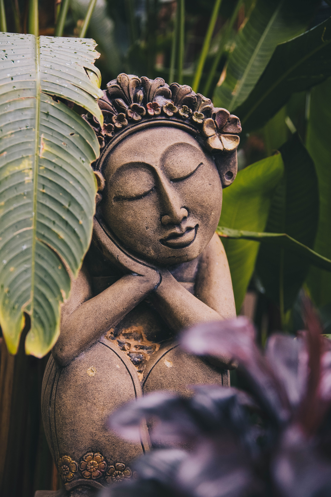

The Extraordinary Experience

#1 Phangan Island
For people who love extraordinary experience.
Thailand is one of the top
destinations that a number of tourist
visit. Although the capital city Bangkok
is also worthy to be called as an
adventure destination, I would like to
introduce another best spot to visit in Thailand.
Phangan island is essentially known as
a party island and a lot of people visit
to enjoy the party nights that are taken
place every single day.
Things you can do
You can enjoy going to a mountain,
river and a beautiful beach by
motorcycle. You can rent it with your
driver licence. If you want to experience
scuba diving, you can take a boat trip
for a couple of hours and reach
the place called Tao island, which is
called the place of the mecca for scuba
diving among divers.
Since a various kind of parties
are held every single night, you can
spend a night with many tourists dancing,
drinking, and joining fire performance.
Food/Tourist attractions
Things you can eat
Phangan island is tropical resort, so
fresh squeezed juice is amazing with
traditional Thai foods. Mango juice is
especially very good among them. The sour
spicy soup called Tom yam kung is also exceptional taste.
Places you should visit
If you choose Phangan island for your next trip, you should visit there when the most biggest rave party called full moon party is taken place. It is taken place every month when the full moon appears. So you should check when is the date of the next party upcoming.
The best nature adventure
#2 Blue lagoon in Laos
For people who love thrilling things.
What is Laos?
Laos is a rural country in Asia.
Some people do not even know anything about
this country. Even in the capital city, there
is no department stores and no places for fun.
It seems there is nothing you can be excited,
but there is some activities that people who
love an adventure definitely would like.
Things we can do
In Laos, there is a blue lagoon and you can jump into the water from quite high place. It is a very exciting and stimulating activity. You can also rent a motorbike to get to the place and enjoy it.
There are two different bridges that you need to cross to reach the blue lagoon. The one costs money but smoother than another one. Another bridge is for free but tough to cross, so it is totally up to you which one you choose!

A local kid swimming
Food/Tourist attractions
Things you can eat
Traditional foods in Laos is not
something you can find in supermarkets.
Fried Seaweed called Kaipen is a very rare food
for tourists. It is a type of Laotian snack made
with freshwater green algae harvested from Mekong
in northern Laos.
Places you should visit
Blue lagoon in Laos is very mysterious place. The color of the water is very beautiful emerald green. A lot of tourists come to the place to jump into the water every year. There is more than one blue lagoon in Laos. It can be also fun to find out the secret blue lagoon as people who like to explore.

Kaipen

Local lao food